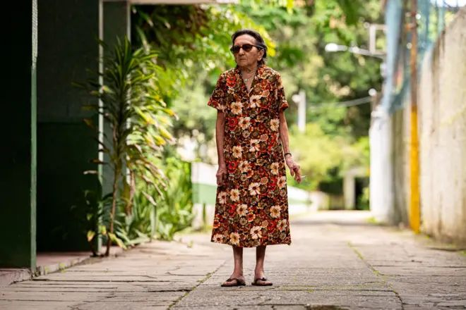
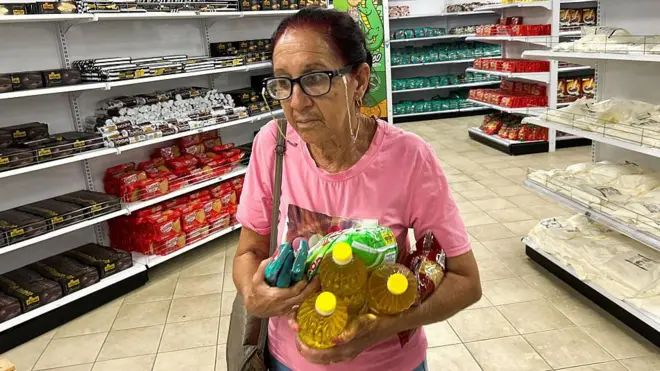
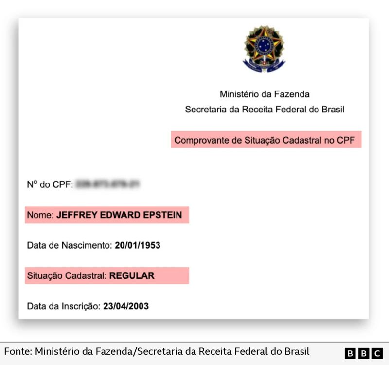

Epstein's Brazilian interests went far beyond victim exploitation
Interesses brasileiros de Epstein iam muito além da exploração de vítimas
Documents released by the U.S. Department of Justice reveal that Jeffrey Epstein's interest in Brazil extended well beyond his involvement with models and alleged human trafficking networks. The evidence shows a calculated attempt to develop legitimate business interests and connections in the country, including registering a Brazilian tax identification number.
BBC News Brasil identified the existence of a CPF (Cadastro de Pessoas Físicas)—Brazil's tax identification number—registered in Epstein's name. Additionally, documents show that Epstein had a team of consultants monitoring the Brazilian economy and suggesting investment opportunities tied to the country.

The Brazilian tax identification registration
O registro de identificação fiscal brasileiro
According to Brazil's Federal Revenue Service (Receita Federal), Epstein's CPF was registered in 2003. The timing is significant: this was the same year that Ghislaine Maxwell, Epstein's alleged accomplice and later convicted co-conspirator, exchanged emails with a Brazilian businessman about a trip Epstein and Maxwell planned to Brazil between late 2002 and early 2003.
BBC News Brasil confirmed that the CPF was registered with Epstein's correct birth date and remains in good standing with Brazilian authorities.
For tax attorney Alexandre Tortato, the existence of a CPF in Epstein's name signals more than casual tourism. "A tourist doesn't need a CPF. Normally, a foreigner who issues a CPF has commercial interests here."
A notation in U.S. government documents provides further confirmation: "Brazilian CPF (has old POA in it)." POA stands for Power of Attorney, a legal mechanism that, according to Brazil's Federal Revenue Service, is one common way for foreigners to obtain a CPF.

Brazilian citizenship: an 'interesting idea'
Cidadania brasileira: uma ideia 'interessante'
Email exchanges between Epstein and German businesswoman Nicole Junkermann reveal discussions about obtaining Brazilian citizenship. On October 5, 2011, Junkermann asked Epstein: "What do you think of getting Brazilian citizenship?"
That same day, Epstein responded: "Interesting idea, however visas could be a problem when traveling to other countries." The correspondence does not clarify the context or motivation for the suggestion, but the exchange occurred two years after Epstein had served 13 months in prison following a plea agreement with Florida authorities.
A former Epstein employee testified to U.S. authorities in 2010 that he made regular trips to Brazil to visit clients and maintain contact with a woman who introduced him to girls, including minors.
Brazilian citizenship would have streamlined his travel, eliminating the need for visa applications to the Brazilian government. When questioned, the Ministry of Justice confirmed that no naturalization record exists in Epstein's name.

Currency speculation and economic monitoring
Especulação cambial e monitoramento econômico
Beyond establishing a business presence, Epstein had financial consultants monitoring the Brazilian economy for investment opportunities. On March 12, 2013, Epstein received currency investment recommendations from Paul Barret, then working at JP Morgan, regarding the Brazilian Real.
Barret advised investing $1 million. Epstein's response was simple: "Ok." The investment would have been made through Southern Trust, one of Epstein's business entities. While BBC News Brasil found no emails confirming transaction completion, the prediction was accurate: Brazilian interest rates rose from 7.5% in 2013 to 11% by July 2014, the month of the World Cup.

Building networks among brazil's economic elite
Construindo redes entre a elite econômica do Brasil
Most revealing are Epstein's apparent efforts to establish direct relationships with prominent Brazilian businessmen. Email exchanges spanning 2002-2003 and 2012-2013 show deliberate attempts to arrange meetings with Brazil's economic elite.
In December 2002, Ghislaine Maxwell corresponded with Brazilian businessman Marcelo de Andrade, requesting introductions to prominent figures. De Andrade subsequently suggested three key business leaders:
- Arminio Fraga, then president of Brazil's Central Bank
- Jorge Paulo Lemann, now Brazil's third-wealthiest person
- Luiz Fernando Levy, then publisher of Gazeta Mercantil newspaper
De Andrade confirmed a dinner meeting with Epstein and Maxwell in São Paulo between late 2002 and early 2003, but stated he believed the suggested meetings did not occur. When confronted with evidence by BBC News Brasil, he said: "I didn't have the slightest idea. When the news came out, years later, I was quite surprised. It's really a shame when we see people using their power and influence for such terrible things."
Arminio Fraga, when contacted by BBC News Brasil, denied meeting with Epstein: "They gave my name as someone to meet, in a list with others. It didn't happen."
Jorge Paulo Lemann's office stated: "We reiterate that Jorge Paulo Lemann never knew Jeffrey Epstein." The statement also clarified that a separate connection with Epstein adviser Boris Nikolic resulted from a Bill Gates introduction and had no connection to Epstein.
Epstein's network of attempted contacts
Rede de contatos tentados de Epstein
Central Bank
Entrepreneur
Former Billionaire
The Eike Batista connection
A conexão Eike Batista
Another prominent target was Eike Batista, who once ranked among the world's seven wealthiest individuals. Throughout 2012, emails show Epstein attempting to establish contact with Batista through British entrepreneur Ian Osborne.
On August 28, 2012, Epstein wrote to DP World CEO Sultan bin Sulayem demonstrating knowledge of Batista's business: "I know Eike Batista approached Hutchinson for a JV on a new port in Brazil. He has cash flow problems. Any interest?"
On March 6, 2012, Osborne consulted Batista's executive Marcelo Horcades about arranging a meeting. The following day, Osborne sent Epstein a file titled "Eike Batista 120225 final.doc"—suggesting a potential business proposal—though the document itself was not located.
Batista's office confirmed that Osborne did approach him with proposals, but that "the proposals had no concrete result." Batista reaffirmed: "The businessman Eike Batista once again reaffirms that he does not know, never conversed with, or exchanged messages with Epstein."

Strategic planning and calculated infiltration
Planejamento estratégico e infiltração calculada
This body of evidence reveals a sophisticated dimension to Epstein's Brazilian involvement beyond simply exploiting women. It demonstrates deliberate efforts to develop legitimate business interests and to infiltrate Brazil's economic and business elite—potentially to build cover for illicit activities and to expand his networks of influence and access.
The CPF registration, Brazilian citizenship inquiry, economic monitoring by consultants, and carefully orchestrated business introductions paint a picture of strategic calculation rather than casual tourism. Epstein was building infrastructure in Brazil—financial, legal, and social—to facilitate his operations.
That none of the businessmen claim to have met with Epstein, and no concrete business deals are documented, does not negate the clear intent: Epstein wanted access to Brazil's most powerful and wealthy individuals, and he mobilized significant resources in pursuit of that goal.